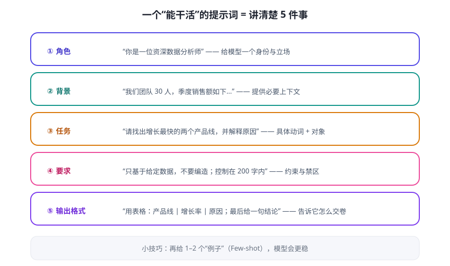

提示词（Prompt）就是你给模型的任务说明书。模型“接龙”时参考什么，很大程度上取决于你怎么说。同一个模型，提示词差一点，结果可能从“能用”变成“废话”。提示词工程 = 学会写这份说明书。
“说清楚”比“说得多”重要
对比两种问法：
😐 模糊：
“分析一下我们的销售数据。”（模型不知道你的目标、不知道数据在哪、不知道输出什么格式 → 给你一篇正确的废话）
“分析一下我们的销售数据。”（模型不知道你的目标、不知道数据在哪、不知道输出什么格式 → 给你一篇正确的废话）
😀 清晰：
“你是资深数据分析师。这是 2025 年 4 个季度、3 条产品线的销售额（见下表）。请找出增长最快的产品线并解释原因，用表格输出，控制在 200 字内。”（模型知道：身份、背景、任务、约束、格式）
“你是资深数据分析师。这是 2025 年 4 个季度、3 条产品线的销售额（见下表）。请找出增长最快的产品线并解释原因，用表格输出，控制在 200 字内。”（模型知道：身份、背景、任务、约束、格式）
一个能干活的结构化提示 = 5 件事

通用模板（直接复制用）
【角色】你是一位__（身份/专业背景）__。 【背景】__（把必要的上下文、数据、限制说清楚）__。 【任务】请__（用动词描述要做什么，越具体越好）__。 【要求】__（不许编造 / 篇幅 / 语气 / 针对谁）__。 【输出格式】__（表格 / 列表 / JSON / 先结论后解释）__。 【示例】（可选）例如：__（给 1-2 个你期望的输入输出样例）__。
三个立刻见效的技巧
- 给例子（Few-shot）：与其描述规则，不如直接给 1–2 个“输入→正确输出”的例子。模型是模仿高手，例子比抽象描述更管用。
- 让它“一步一步想”（思维链 CoT）：复杂问题加一句“请先列出解题步骤，再给出答案”，正确率通常明显提升——因为模型把推理过程“写下来”时更不容易跳步出错。
- 声明禁区：“如果信息不足，请直接说不知道，不要编造。”这句话能显著减少幻觉式回答。
常见坑（以及解法）
| 坑 | 解法 |
|---|---|
| 一次塞太多任务：“总结 + 翻译 + 提建议 + 写诗” | 拆成多轮，一次只让它做好一件事 |
| 没给格式，得到一大段难用的文字 | 明确“用表格 / 用列表 / 输出 JSON” |
| 把关键数据写在长文末尾，模型“看漏” | 重要信息前置、加粗或用分隔符标出 |
| 期待它读心 | 把背景、受众、成功标准写出来 |
⚠️ 给 Agent 开发者的提示：当你以后写 Agent 时，系统提示词（System Prompt）就是给 Agent 的“人设 + 工作守则”，通常一次性写很长、很细。今天练的这套结构化方法，正是将来写系统提示词的基本功。
✍️ 今日练习（约 12 分钟）
- 用上面的模板，写一个你真实需要的提示词（工作汇报、学习总结、写作都行）。
- 同一任务分别用“模糊版”和“模板版”问两次，对比输出差异，把结论记下来。
- 练习“禁区声明”：问它一个它不可能知道的小众事实（比如某小区今天的物业通知），看加了“不知道就直说”后回答有什么变化。
📌 今日小结
本质提示词 = 给模型的任务说明书；说清楚 > 说得多
五要素角色 · 背景 · 任务 · 要求 · 输出格式（+ 示例）
三技巧给例子（Few-shot）· 一步一步想（CoT）· 声明禁区防幻觉
进阶关联这套写法 = 将来 Agent 系统提示词的基本功
明天预告：光会“说”还不够——Agent 怎么真正“动手”？学习工具调用（Function Calling），给 Agent 接上手脚。